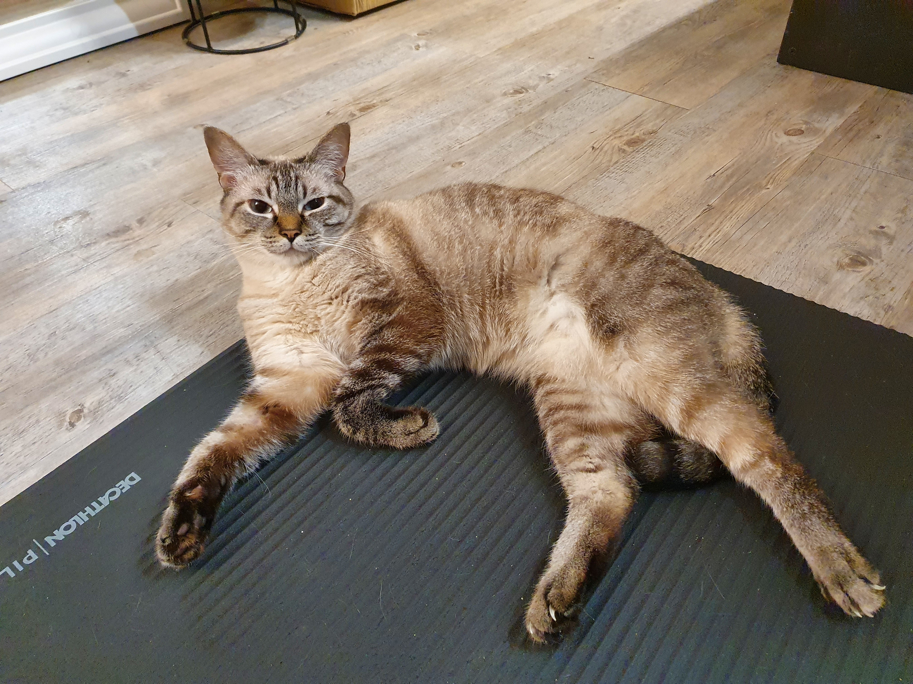

Yuki faisant une série de gainage sur le côté très intense pour perdre un peu l'embonpoint
Voici les qualités de Yuki :
Vous pourrez très rapidement déterminer une ressemblance frappante avec son ancètre commun : le Tigre du Bengale.